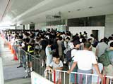
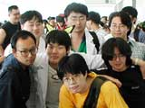
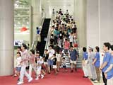

| ＮＩＮＴＥＮＤＯスペースワールド２０００開場直前！ |
 NINTENDOスペースワールドも二日目に突入。今日も幕張メッセの会場前では、たくさんのお客さんが今か今かと開場を待っています。それでは本日も、来場者レポートいってみましょう！
|
 一番のりは、初日のグループとは違う人たちでした。都内出身というこの7人、昨日もそうとう早くから並んでいたそうで、さすがに疲れてグッタリしているメンバーも何人か見られましたが、写真をお願いすると、みなさん快く応じてくれました。感謝！ 代表(？)のミキオさん(22歳)にお話を聞いてみたところ、「一番興味があるのはゲームボーイアドバンスのソフト」と答えてくれました。今日もしっかり見てって下さいね。
|
| 二番手は、群馬県から来た布川寛さん(25歳)。なんと彼、1995年、1996年、1997年、1999年と、4年連続NINTENDOスペースワールド初日一番乗りを果たした人物！昨日ゲームボーイアドバンスのソフトを見て回った布川さんは、今日と明日で、NINTENDO64とゲームボーイのソフトを全部体験するつもりとか。さすが4年連続一番乗りは気合が違います。がんばってください！ |
 本日も、予定より早い8時45分に開場。昨日もそうでしたが、パニックがおきないよう、80〜100人くらいずつ間隔をあけ、スタッフが手際よくお客さんを誘導します。そして、アッというまにゲームボーイアドバンスのコーナーに人だかりができました。みなさんのこのハードに対する期待の高さを感じますね。また、中央のイベントステージも、ショーが始まる前から席に座り込むお客さんがたくさんいましたよ。みなさん、NINTENDOスペースワールドを今日も充分楽しんでってくださいね！
|